Schneeberichte · November 2026
Tägliche Schneeberichte für Skifahrer: wo der Schnee liegt, was kommt und wo du fahren kannst, aus der SnowScope-Schneekarte und Messstationen. Jede Zahl stammt aus den Daten des Tages.

Les Grands Montets: Wie viel Schnee kommt? 73–79 cm bis zum 18. November. Wie viel Schnee kommt in den Alpen, und wo? Regen und Schnee gemischt: …

In Andermatt (2963 m) zeigt die Prognose 75 mm Niederschlag vom 15. November bis 20. November. In den nassen Stunden liegt die Nullgradgrenze bei etwa

Lies den Schnee in den Pyrenäen heute, und du bekommst frischer Pulverschnee, dünner Schnee zum Saisonstart und milde Luft, die einen Harschdeckel …

Wir haben den Schnee am Boden, den Neuschnee der letzten 72 Stunden und das, was die Prognose dazugibt, abgewogen und Tuckerman Ravine und Black …

Les Deux Alpes: Wie viel Neuschnee fiel? 38 cm in 72 Stunden (15. November). Wo fiel in den Alpen der meiste Neuschnee? La Grave bekam in den letzten …

Manning Park Resort: 11 cm Neuschnee in 72 Stunden (Westkanada, 15. November). Whistler Blackcomb bekam in den letzten 72 Stunden 82 cm Neuschnee, …

Unsere Prognose für den 15. November 2026 zeigt, dass Courmayeur in Italien mit 88 cm Neuschnee bis Mittwoch europaweit führend ist.

Beaver Mountain verlangt für die Saison 2026-27 einen einheitlichen Erwachsenenpreis von 75 $ pro Tag. Unsere Schneehistorie zeigt: Anfang Dezember ist dort Glückssache; die Woche vor Weihnachten ist deutlich sicherer.

Bridger Bowls Erwachsenenticket 2026/27 kostet 86 $ online, 99 $ am Schalter. Unsere Historie sagt: Mitte Dezember ist auf der Bergmitte Glückssache; Ende Dezember ist sicherer.

Indy Base Pass 419 $, Indy+ 469 $, zwei Tage in jedem Partnergebiet. Wir haben ihn den geprüften Dezember-Tagespreisen von sieben Indy-Gebieten gegenübergestellt, samt ihrer Schneechancen.

Erwachsenentickets bei Lookout Pass kosten 2026-2027 unter der Woche mit Reservierung 63 $, am Wochenende 75 $. Die Bergmitte hatte bis zum 15. Dezember in 85 % der vergangenen Winter 20 in (50 cm).

Montana Snowbowls Erwachsenentickets 2026/27 kosten 78 $ unter der Woche und 85 $ am Wochenende. Die Bergmitte hatte bis zum 15. Dezember in 83 % unserer vergangenen Winter 20 in (50 cm).

Ski Cooper hält den Erwachsenenpreis an Wochentagen für 2026-27 bei 49 $ (99 $ am Wochenende). Die Bergmitte hat am 15. Dezember meist 26 in (66 cm) Schnee, 70 % der Winter über 20 in.

Sunlight-Tickets starten bei 74 $, und der Sunny 6 Pack kostet 349 $, wenn er bis zum 30. November 2026 gekauft wird. Die Bergmitte hatte bis zum 15. Dezember in 72 % der Winter 20 in (50 cm).

Ein Timberline-Tagesticket kostet 129 $ außerhalb der Spitzenzeiten und 161 $ zur Spitzenzeit; das Nachmittagsticket liegt bei 96 $ außerhalb der Spitzenzeiten. Auf der Mittelstation liegen bis zum 15. Dezember meist 52 in (132 cm) Schnee.

Von Ski Cooper (49 $ unter der Woche, 99 $ am Wochenende) bis Mt. Baker (98,80 $ gegen 115,42 $): geprüfte Dezember-Preisunterschiede an sieben US-West-Skigebieten, mit ihren Schneechancen.

Schweitzers 3-Pack für 2026/2027 kostet 249 $, laut eigener Rechnung des Resorts 83 $ pro Tag. Oben hält sich bis zum 15. Dezember meist 54 in (138 cm) Schnee.

Krvavec im Dezember: Tageskarte 47 EUR, 6 Tage 205 EUR, aber nur 13 cm an der Mittelstation an einem typischen 15. Dezember, und 11 von 46 Wintern ohne Schnee.

Skifahre auf 157 km markierten Pisten in Serre Chevalier, wo die Bergspitze bis Mitte Dezember eine 100 %ige Schneewahrscheinlichkeit hat.

Turracher Höhe im Dezember: 23 cm an der Mittelstation an einem typischen 15. Dezember, 39 % der Winter mit 30 cm vor Weihnachten; 6 Tage Nebensaison 353 EUR.

Hochkar im Dezember: Tageskarten an Dezemberterminen ab 32,90 bis 47,90 EUR; 38 cm an der Mittelstation an einem typischen 15. Dezember, seit den 1980ern weniger.

Idre Fjäll im Dezember: 32 cm an der Mittelstation an einem typischen 15. Dezember; 65 % der Winter mit 30 cm Mitte Dezember, 76 % in der Weihnachtswoche. Ehrliche Chancen.

Brighton ab 72 $ gegen Ski Cooper mit 49 $ unter der Woche und Wolf Creek mit 96 $: Budget-Skigebiete in Utah und Colorado im Vergleich über 46 Winter Dezember-Schnee.

Zehn europäische Skigebiete im Ranking für den Dezember, angeführt von Les 2 Alpes mit 75 cm Schnee auf mittlerer Höhe.

Brundage-Tagestickets starten an ausgewählten Tagen bei nur 65 $; die Bergmitte hatte am 15. Dezember in 87 % unserer vergangenen Winter 20 in (50 cm) Schnee. Feiertagsdaten, die man meiden sollte.

Boí Taüll startet auf 2039 m und schlägt Baqueira Beret beim Preis für den Tagesskipass, obwohl der Schnee Anfang Dezember Geduld erfordert.

Sälen im Dezember: 28 cm an einem typischen 15. Dezember und 48 % der Winter mit 30 cm Mitte Dezember, weniger als in den 1980ern; Trysil nebenan schneidet besser ab.

Die Tageskarte für Erwachsene bei Snow King startet bei 100 $. Laut unserer Schneehistorie lag auf halber Höhe bis zum 15. Dezember in 87 % der Winter eine Schneedecke von 20 in (50 cm): eine günstige Art, das Jackson-Tal zu beskifahren.

Orcières Merlette bietet eine hohe Basis auf 1.826 m und einen 6-Tage-Pass ab 227 EUR, was es zu einer zuverlässigen Wahl für einen Skiurlaub im Dezember macht.

Lohnt sich Alpe d'Huez für Dezember 2026? Wir prüfen die Schneechancen, den Startpreis von 58,00 EUR und vergleichen es mit Les 2 Alpes.

Sloweniens Skipässe sind die günstigsten (Krvavec 205 EUR für 6 Tage), doch Naturschnee im Dezember ist dort selten; Lachtal, Hochkar und Mölltaler Gletscher schneiden besser ab.

Loveland verkauft Online-Tickets für 60 $ bis zum 13. Dezember 2026, danach 159 $ am Schalter. Reicht der Schnee Anfang Dezember aus? Unsere 46 vergangenen Winter antworten Woche für Woche.

Cauterets bietet 25 km Pisten für 46 EUR, aber unsere Schnee-Historie zeigt, dass die besten Chancen auf eine Schneedecke in der letzten Dezemberwoche liegen.

Skifahren im Lachtal im Dezember: Tageskarte 62 EUR, Kinder bis 6 gratis, 46 cm an der Mittelstation an einem typischen 15. Dezember – aber klar fallender Trend.

Online-Tickets für White Pass kosten ab 69 $ außerhalb der Stoßzeiten und 89 $ an Spitzentagen, und auf halber Berghöhe lagen am 15. Dezember in 87 % der vergangenen Winter 20 in (50 cm) Schnee.

Fahre diesen Dezember auf den 131 km Pisten der Forêt Blanche mit einem 6-Tage-Pass für 298 EUR.

Ruka im Dezember: 6-Tage-Skipass 265 EUR, Tageskarte 58 EUR; 36 cm an einem typischen 15. Dezember, aber nur 39 % der Winter mit 30 cm in der ersten Woche.

Bei Monterosa Ski kostet der Tagespass online 40,00 bis 71,00 EUR. Im Dezember liegt der Schnee oben: üblich 124 cm auf 3.030 m, 6 cm auf 1.207 m.

Bei Wolf Creek kostet das Erwachsenenticket für die Saison 2026-2027 an normalen Tagen 96 $ und an Spitzentagen 110 $; auf halber Höhe lagen an einem typischen 15. Dezember 34 in (87 cm) Schnee.

Fellhorn/Kanzelwand im Dezember: 63 cm am Gipfel (1965 m) an einem typischen 15. Dezember, 10 cm im Tal; 6-Tage-Skipass im Advent 344,50 EUR bis 20. Dezember.

Plane deinen Dezember-Trip 2026 nach Les Orres, indem du die wöchentlichen Skipasspreise mit unserer Schneehistorie aus 46 vergangenen Wintern vergleichst.

Hemavan im Dezember: 82 cm an der Mittelstation an einem typischen 15. Dezember, jeder Winter mit 30 cm Mitte Dezember; der tiefste Dezember unserer Nordic-Auswahl.

Tageskarten in Brighton starten für 2026/27 bei 72 $, wenn man früh kauft. Auf halber Höhe liegen am 15. Dezember meist 37 in (94 cm) Schnee, gegenüber 25 in (64 cm) in Park City.

Vergleiche Grandvalira und spanische Skigebiete im Dezember 2026 bezüglich Schneehöhen, Lift-Höhen und Preisen ab 49,00 EUR.

Pitztaler Gletscher im Dezember: 87 cm an der Mittelstation an einem typischen 15. Dezember, mehr Dezemberschnee als in den 1980ern; Tageskarte 77 EUR, 6 Tage 410 EUR.

16 preisgünstige US-Skigebiete, eingestuft nach den Dezember-Schneechancen aus 46 vergangenen Wintern, mit den geprüften Tagespreisen: von 49 $ unter der Woche bis 125 $ und mehr.

Für eine günstige Skiwoche mit der Familie im Dezember in Astún-Candanchú solltest du Ende Dezember anpeilen, wenn die oberen Pisten in 67 % der vergangenen Winter guten Schnee haben.

Deutschland im Dezember: Zugspitze und Fellhorn-Gipfel hatten Mitte Dezember in mindestens 9 von 10 Wintern 30 cm; Sudelfeld, Brauneck und Feldberg nur selten.

Puy-Saint-Vincent bietet einen 44 EUR Erwachsenen-Tagespass und soliden Dezember-Schnee in der Höhe, hier im Vergleich zum großen Nachbarn Serre Chevalier.

In all unseren 46 vergangenen Wintern lagen an Grand Targhees Mittelstation am 15. Dezember mindestens 20 in (50 cm) Schnee. Das Online-Tagesticket kostet je nach Datum 125 $ bis 180 $.

Oppdal im Dezember: 60 cm an der Talstation (585 m) an einem typischen 15. Dezember, 93 % der Winter mit 30 cm Mitte Dezember – besser als Trysils Tal.

Grimentz-Zinal bietet 71 km Pisten und verlässlichen Schneesicherheit in großer Höhe für Ihre Dezember-Reise, mit 6-Tages-Pässen für CHF 339,00.

Österreich vor Weihnachten: Galtür 258 EUR und Kühtai 269 EUR für 6 Tage, mit 30 cm in über 90 % der Winter; Gletscher kosten mehr, kleine Hügel sind ein Risiko.

Planst du eine Reise nach Baqueira Beret im Dezember? Sieh dir unsere Schnee-Historie an, Ticketpreise ab 70,00 € für einen Tag und den Vergleich zu Astún-Candanchú.

Wir bewerten französische Skigebiete nach der Schneewahrscheinlichkeit im Dezember und den Skipasspreisen, beginnend bei 36,00 EUR für einen Tagespass für Erwachsene in Les Karellis.

In Oukaïmeden gibt der Dezember 18 cm auf Mittelstationshöhe in einem typischen Monat, gegen 44 cm im Februar und 53 cm im März. Was 46 Winter über den richtigen Skimonat sagen.


Galtür im Dezember: 55 cm an der Mittelstation an einem typischen 15. Dezember, 93 % der Winter mit 30 cm Mitte Dezember; Tageskarte Nebensaison 55,50 EUR bis 18. Dezember.

Geilo im Dezember: 57 cm an der Mittelstation an einem typischen 15. Dezember, 96 % der Winter mit 30 cm Mitte Dezember; Tageskarte ab 590 NOK (rund 56 EUR).

Grandvalira wird oft als günstiges Skigebiet für Dezember verkauft, doch der Naturschnee an der Talstation liegt in den vergangenen Wintern im Schnitt bei nur 9 cm.

Hemsedal im Dezember: 70 cm an der Mittelstation und 106 cm am Gipfel an einem typischen 15. Dezember, aber 32 cm im Tal; Geilo nebenan ab 590 NOK pro Tag.

Hintertuxer Gletscher im Dezember: 98 cm auf 3245 m und 52 cm an der Mittelstation an einem typischen 15. Dezember; Tageskarte 82 EUR, 6 Tage 399 EUR.

Vergleiche die Schneechancen im Dezember und geprüfte Skipasspreise ab 40,00 EUR in italienischen Skigebieten für deinen Wochenendtrip mit dem Auto.

Skifahren in Kühtai im Dezember: 60 cm an der Talstation (1939 m) an einem typischen 15. Dezember, 6-Tage-Skipass in der Nebensaison 269 EUR bis 18. Dezember.

Les 2 Alpes reicht bis auf 3.511 m für viel Schnee im Dezember 2026, mit einem 6-Tage-Skipass für Erwachsene für 266,50 EUR.

Les Karellis bietet 45 km Pisten und einen 6-Tage-Skipass für Erwachsene für 191,00 EUR mit einer 98 %igen Schneewahrscheinlichkeit auf mittlerer Höhe Ende Dezember.

Levi im Dezember: 38 cm an einem typischen 15. Dezember, 91 % der Winter mit 30 cm in der Weihnachtswoche, mehr Dezemberschnee als früher; Tageskarte 60 EUR, online 57 EUR.

Fahr Ski in Livigno für 51,50 EUR pro Tag vor dem 18. Dezember, wenn der Schnee am Gipfel in 100 % der vergangenen Winter 30 cm erreicht.

In Michlifen haben 89 % der Winter am 15. Dezember fast keinen Schnee (unter 5 cm). Was 46 Winter über Skifahren im Mittleren Atlas im Dezember sagen.

Montgenèvre hat im Dezember üblicherweise 56 cm Schnee an der Talstation und bietet Wochenendfahrern damit eine bessere Schneelage als Sestriere auf der anderen Seite der Grenze.

Skifahren in Obertauern im Dezember: 43 cm an einem typischen 15. Dezember an der Mittelstation, 6-Tage-Skipass vor Weihnachten 331 EUR.

Oukaïmeden Mitte Dezember: 16 cm auf Mittelstationshöhe in einem typischen Winter, 50 cm oder mehr in nur 11 % der Winter. Datum für Datum, was 46 Winter sagen.

Oukaïmeden liegt 50 km Luftlinie von Marrakesch entfernt. Wie ein Dezember-Skiwochenende gelingt: wann man fährt, wie die Schneechancen stehen, was man über die Preise weiß.

Les 3 Vallées: 75,70 € pro Tag vom 5. bis 18. Dezember 2026. Oukaïmeden: kein offizieller Online-Tarif, 16 cm auf Mittelstationshöhe Mitte Dezember. Der ehrliche Vergleich.

Pila oberhalb von Aosta bietet einen günstigen Tagesskipass für 60,00 EUR und zuverlässigen Schnee im Dezember auf den oberen Pisten.

Die Lifte in Saas-Fee erreichen 3.556 m, wo unsere Schnee-Historie zeigt, dass 100 % der vergangenen Winter bis Mitte Dezember mindestens 30 cm Schnee hatten.

12 nordische Skigebiete im Dezember: Hemavan, Hemsedal und Geilo hatten Mitte Dezember in 96-100 % der Winter 30 cm an der Mittelstation; Tageskarten in Finnland 58-60 EUR.

Dezember-Schneechancen aus 46 Wintern und geprüfte Tagespreise: Ski Cooper 49 $, Les 3 Vallées 75,70 €, Oukaïmeden ohne offiziellen Tarif. Wo ein günstiger Dezember-Skitag funktioniert.

Entdecke die ruhigen Pisten von St-Luc Chandolin, wo die Schneehöhe auf mittlerer Höhe in 98 % der Winter Ende Dezember 30 cm erreicht.

Trysil im Dezember: 44 cm an der Mittelstation an einem typischen 15. Dezember, 83 % der Winter mit 30 cm Mitte Dezember; die Preise sind dynamisch, also früh buchen.

Valloire-Valmeinier bietet 131 km Pisten und eine 98 % Chance auf 30 cm Schnee auf halber Höhe bis Mitte Dezember.

Zugspitze im Dezember: 122 cm auf 2627 m an einem typischen 15. Dezember, Tageskarte online 70,50 EUR; Garmisch-Classic darunter 69 EUR mit deutlich weniger Schnee.

Mölltaler Gletscher im Dezember: 66 cm am tiefsten Lift (2103 m) und 128 cm an der Mittelstation an einem typischen 15. Dezember; 6-Tage-Skipass Nebensaison 332 EUR.

Mt. Baker im Dezember: 46 in (116 cm) Schnee auf halber Höhe an einem typischen 15. Dezember, und ein 98,80-$-Ticket von Montag bis Donnerstag, das es nur am Tag selbst an der Kasse gibt.

Kannst du dich als vorsichtiger Anfänger im Dezember auf Courmayeur verlassen, wenn es auf halber Höhe in unseren vergangenen Wintern im Schnitt 60 cm Schnee gibt?

Åre im Dezember: 40 cm an der Mittelstation an einem typischen 15. Dezember, 89 % der Winter mit 30 cm Mitte Dezember, aber oben ein starker Rückgang seit den 1980ern.

Die weiße Fläche auf der Karte sank von 49.467 sq mi (128.120 km²) (11. November) auf heute 49.050 sq mi (127.040 km²), und die Prognose sagt …

Von jetzt bis zum 16. November erwarten wir 5 in (12 cm) in Stowe, 4 in (11 cm) in Bolton Valley Resort und 4 in (10 cm) in Sugarbush Resort. Unsere …

201.390 km²: So groß ist die Schneefläche, die unser Modell heute in Westkanada zählt. Die letzte klare Ansicht jedes Ortes, bis zum 13. November: …

Skibedingungen in Deer Valley am 13. November 2026: noch kein richtiger Schnee am Boden, rund 4 in nahe dem Gipfel durch den Sturm am Wochenende, Regen auf der tiefen East-Village-Seite unter etwa 6,700 bis 7,600 ft und 11 in oben über die Woche.

Ist das ein guter Winterstart im Nordosten der USA? Der heutige Schnee in 4 Skigebieten im Nordosten der USA, verglichen mit demselben Datum in jedem …

Von jetzt bis zum 16. November erwarten wir 13 in (34 cm) in Bear Valley, 13 in (34 cm) in Dodge Ridge und 13 in (33 cm) in Badger Pass. Ein Wort zu …

Neuschneevorhersage für Park City (Utah) am 13. November 2026: im Moment kaum Schnee am Boden, rund 5 in nahe dem Gipfel durch den Sturm am Wochenende bei einer Schneefallgrenze von 7,400 bis 7,700 ft, Regen unten und rund 12 in oben über die Woche.

Stratton nach Höhe, aus unserem Modell: Gipfel 4 in (10 cm) (3.881 ft / 1.183 m), Mitte 2 in (6 cm) (2.936 ft / 895 m), Tal 1 in (2 cm) (1.991 ft / …
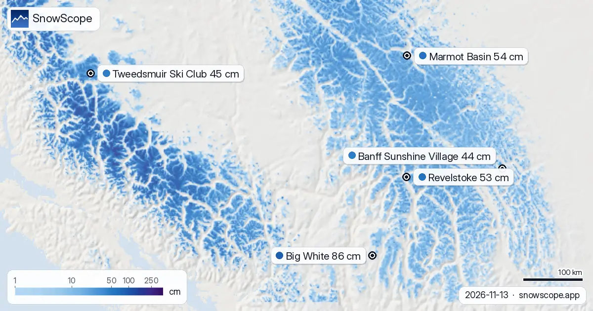
Füllt sich der Schneespeicher wie üblich? Wir haben den heutigen Schnee in 5 Skigebieten in Westkanada mit demselben Datum in jedem der letzten 46 …

Schneevorhersage für Alpental am 13. November 2026: etwa 1 in am oberen Berg, am Wochenende Regen fast bis zum Gipfel bei einer Schneefallgrenze von 5,400 bis 5,600 ft, nächste Woche oben 4 bis 5 in Regen und Schnee gemischt.

Schnee-Check für Bogus Basin am 13. November 2026: noch kein Schnee am Boden, am Wochenende Regen und nasser Schnee mit einer Schneefallgrenze bei 6,300 bis 6,800 ft, danach kältere Luft und rund 8 in am Gipfel bis nächste Woche.

39 in (99 cm) in den oberen Hängen: Deshalb steht Telluride oben auf unserer Liste. Schneehöhe heute, Neuschnee der letzten 72 Stunden, Prognose: …

Der Pistenplan von Sillian (Hochpustertal) mit unserer Schneeschicht am 13. November 2026: 8,6 cm am Gipfel auf 2399 m, untere Hänge aper, und eine Woche mit Regen und Schnee gemischt, Schneefallgrenze bei 1.800 bis 2.000 m.

Revelstoke Schneeprognose: bis zu 10–21 cm bis zum 16. November erwartet (Westkanada). In Whistler Blackcomb liegt die Nullgradgrenze am 13. November …

Schneelage in Silvretta Montafon am 13. November 2026: 4,5 cm am Gipfel auf 2421 m, Mittelstation und Tal noch aper, diese Woche rund 40 cm in der Höhe, im Tal Regen unter 1.500 m.

Schneebericht Lech Zürs am 13. November 2026: rund 6 cm oben (2436 m) und an der Mittelstation, aper in Lech auf 1430 m. Diese Woche oben 42 cm nach unserer Prognose, bis 91 cm nach anderen, Regen und Schnee gemischt um 1400 m. Und warum Lech die schneereiche Seite des Arlbergs ist.

Modell plus Prognose in den Alpen ergibt heute frischer Pulverschnee. Was du anziehst, was du einpackst und wann du fährst, Skigebiet für Skigebiet. …

Schneehöhe in St. Anton am Arlberg am 13. November 2026: rund 1 cm oben (2642 m), 5 cm an der Mittelstation, aper im Ort. Diese Woche 42 cm oben und 33 cm an der Mittelstation, Regen unter etwa 1480 m. Wie viel Schnee die steilen Hänge brauchen.

Dévoluy Schnee-Ausblick: auf Kurs für 24–32 cm bis zum 16. November (Alpen). Bis zum 16. November ergibt unsere Prognose 35 cm in Orcières Merlette, …

Die Schneefläche ist von 39.090 km² am 11. November auf heute 76.100 km² gewachsen, und unsere Prognose ergibt 57.910 km² am 16. November: Mehr Boden …
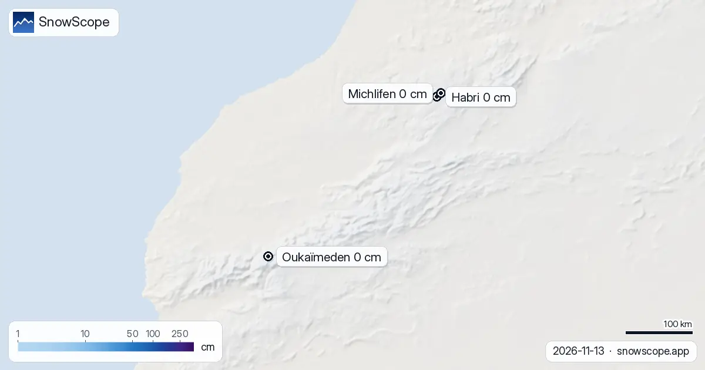
Die Skigebiete im Atlas halten heute keinen Schnee auf ihren Pisten. Schnee ist nur auf den höchsten Gipfeln gespeichert: etwa 40 km² Boden, bis zu …
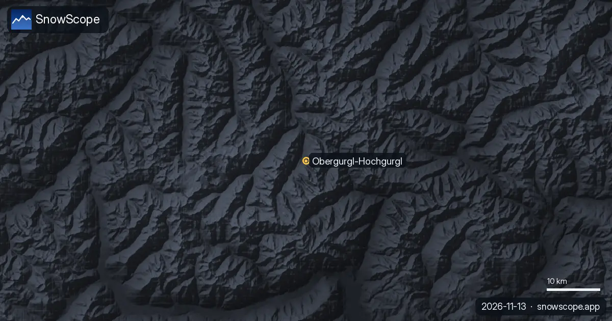
Schneebericht Obergurgl am 13. November 2026: rund 20 cm oben (3024 m), 5 cm an der Mittelstation, schneefrei an den untersten Liften (1784 m). Schneeprognose der Woche: 34 cm oben, 21 cm unten, Schneefallgrenze um 1700 m. Dazu der übliche Saisonstart.

Die Schneehöhe in Sölden am 13. November 2026: rund 9 cm oben auf 3245 m, 5 cm an der Mittelstation, nichts im Tal auf 1346 m. Diese Woche 25 cm oben, Regen unter etwa 1620 m. Gletscher gegen Dorf, dazu 46 vergangene Winter.

Schneefall in Val Thorens, 13. November 2026: 27 cm am Gipfel (3175 m) und 17 cm auf 2498 m in sieben Tagen; die Schneehöhe beträgt 50 cm und 8 cm. Nächste sieben Tage: 86 cm am Gipfel, 73 cm auf 2498 m, Schneefallgrenze weit unter dem Dorf. Die übliche Saison aus 46 Wintern.

Die Schneehöhe in Chamonix am 13. November 2026, Höhe für Höhe: nichts im Talboden, 1 cm auf 2001 m, 12 cm oben am Brévent-Flégère (2486 m), 5 bis 24 cm oben an den Grands Montets (2768 m). Rund ein Meter in der Höhe diese Woche erwartet, Regen im Tal. Wie tief es in Chamonix üblicherweise wird, aus 46 Wintern.

Unsere Tipps sind La Grave, Pfelders und Les Deux Alpes: Wir haben die heutige Schneehöhe, den Neuschnee der letzten 72 Stunden und die Prognose …

Schneehöhe in Ischgl am 13. November 2026: rund 5 cm oben (2868 m), 4 cm an der Mittelstation, nichts im Tal auf 1352 m. Diese Woche bis zu 42 cm am Grat, im Paznaun Regen unter etwa 1570 m. Dazu Tal und Grat in 46 vergangenen Wintern.

Schneebericht Les Menuires vom 13. November 2026: 28 cm am Gipfel (2838 m), nichts liegt auf 2112 m oder 1386 m. Etwa 80 cm am Gipfel in sieben Tagen erwartet, Schneefallgrenze um 1500 bis 1700 m. Warum Val Thorens, 450 m höher im selben Tal, schon mehr hat.
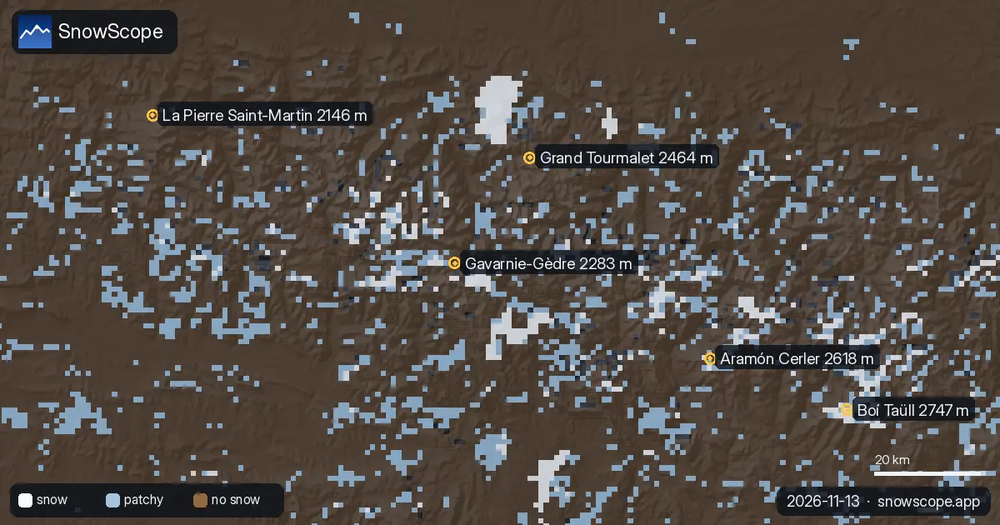
Die Nullgradgrenze entscheidet, ob die Berge Schnee speichern oder Regen abgeben: In den nächsten Tagen sieht unsere Prognose sie in den Pyrenäen …

Schneebedingungen in Tignes am 13. November 2026: 42 cm am Gipfel (3447 m), 12 cm auf 2503 m, ein schneefreies Tal auf 1559 m und 99 cm Neuschnee am Gipfel in sieben Tagen, mit Regen unter etwa 1700 m. Der Vergleich mit 46 vergangenen Wintern.

Neuschnee in La Grave: 61 cm in den letzten 72 Stunden, davon 3 cm in den letzten 24. Unser Schneemodell sieht jetzt etwa 78 cm in den oberen Hängen. …

Unser Schneemodell prognostiziert, dass Whistler Blackcomb bis Montag, den 16. November 2026, 88 cm Neuschnee erhalten wird und damit weltweit führend ist.

Unsere Prognose hat die Nullgradgrenze im Nordosten der USA in den kommenden Tagen zwischen 0 ft (0 m) und 4.593 ft (1.400 m). Am Donnerstag, 12. …

Liegt mehr Schnee als vor einem Jahr? Wir haben heute mit dem 12. November des letzten Winters in 4 Skigebieten im Nordosten der USA verglichen: 0 …
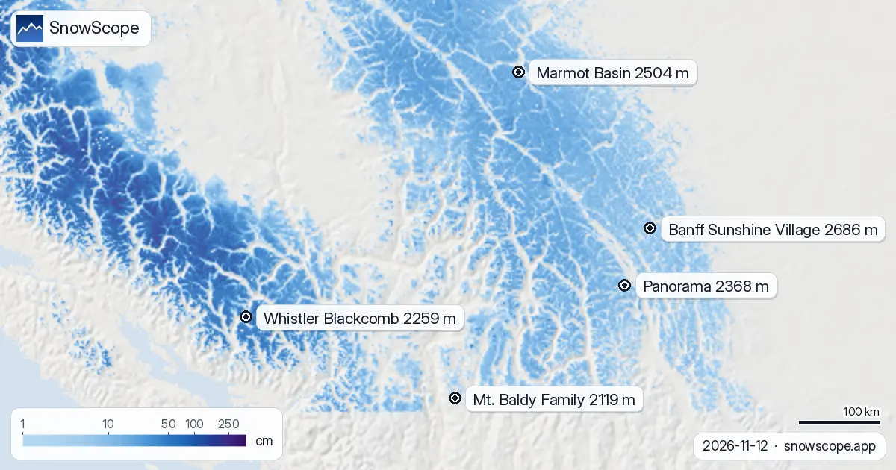
Zwischen 1.380 m und 3.410 m: Dort sieht unsere Prognose die Nullgradgrenze in Westkanada in den nächsten Tagen. In den wärmsten Stunden steigt die …

Die Karten von heute blicken zwei Wochen voraus in den Pyrenäen, 13. November bis 26. November. Sie stammen aus die beiden globalen Modelle, die zwei …

Wo schneit es im Nordosten der USA zwischen dem 13. November und dem 26. November, und wie viel? Wir haben die beiden globalen Modelle, die zwei …

Vierzehn Tage Neuschnee auf einer Karte, 13. November bis 26. November, für jeden Berg in Westkanada: das erwarten die beiden globalen Modelle, die …

In Telluride ändert die Höhe alles: Unser Modell zeigt 0 in (0 cm) im Tal (8.734 ft / 2.662 m), 2 in (6 cm) an der Mittelstation (10.620 ft / …

Hier sind die neuen Karten der nächsten zwei Wochen in den Alpen, 13. November bis 26. November: der erwartete Neuschnee im Gelände, abgelesen aus …

Hier sind die neuen Karten der nächsten zwei Wochen im Atlas (Marokko), 13. November bis 26. November: der erwartete Neuschnee im Gelände, abgelesen …

Unsere Zwei-Wochen-Karten zeigen, wo im US-Westen zwischen dem 13. November und dem 26. November Neuschnee fallen sollte, nach die beiden globalen …

Whistler Blackcomb, 116 cm Schnee: die heutige Höhe in den oberen Hängen (12. November). 162 cm: So viel Schnee liegt heute in den oberen Hängen von …

Kirkwood Schnee-Ausblick: auf Kurs für 16 in bis zum 15. November (US-Westen). Bis zum 15. November ergibt unsere Prognose 23 in (58 cm) in Mt. …

Mount Cain Alpine Park, Neuschnee im regionalen Vergleich: 15 cm in 72 Stunden (12. November). Die Schneefläche schrumpfte von 281.250 km² am 10. …

Cimarron Mountain Club, 39 in Schnee: die heutige Höhe in den oberen Hängen (12. November). 42 in (106 cm): So viel Schnee liegt heute in den oberen …

Der Skibericht für Purgatory Resort (Durango, Colorado) aus unserem Schneemodell: 3 in (7 cm) am Gipfel, Tal und Mittelstation schneefrei, 4 bis 7 in Neuschnee in den nächsten sieben Tagen und wie ein üblicher Winter in Purgatory aussieht.

Mount Cain Alpine Park: Wie viel Schnee kommt? 37 cm bis zum 15. November. Wie viel Schnee kommt in Westkanada, und wo? Bis zum 15. November ergibt …

Unser Modell teilt Piau-Engaly in drei Höhen: 2 cm am Gipfel (2.527 m), 0 cm an der Mittelstation (2.144 m), 0 cm im Tal (1.762 m). In den letzten 72 …

Schneebericht im Atlas (Marokko), 12. November. Skigebiete im Atlas heute: kein Schnee auf den Pisten. Schnee nur auf den höchsten Gipfeln: etwa …

Schneebericht in den Pyrenäen, 12. November. Mit Blick auf den 15. November bringt die Prognose 33 cm in Cauterets Cirque du Lys, 29 cm in …

Die Schneelage in La Rosière im Modelllauf vom 11. November: 24 cm am Gipfel (2799 m), Mittelstation und Dorf schneefrei, und eine Sieben-Tage-Prognose von 108 cm am Gipfel und 61 cm an der Mittelstation. Die Sonnenseite des Kleinen Sankt Bernhard in Zahlen.

Schnee an der Alpe Devero (Ossola, Piemont) in unserem Modell: 2 cm am Gipfel (2201 m), darunter kahl, 36 cm Neuschnee am Gipfel in den nächsten sieben Tagen. Das kleine autofreie Skigebiet und sein üblicher Winter in Zahlen.

Der Schneebericht für Les Arcs aus unserem Modell: 34 cm am Gipfel (3205 m), 2 cm an der Mittelstation, ein schneefreies Tal und bis zu 69 cm Neuschnee am Gipfel in den nächsten sieben Tagen. Was Les Arcs im November und Dezember üblicherweise hat.

Die Schneelage in Méribel aus unserem Modell vom 11. November: 24 cm am Gipfel (2920 m), 1 cm an der Mittelstation, ein schneefreies Tal und eine Prognose von 99 cm am Gipfel und 58 cm an der Mittelstation in den nächsten sieben Tagen. Der übliche Winter in Méribel in Zahlen.

Der Pistenplan von Isola 2000 mit dem Schnee von heute: 9 cm am Gipfel, 7 cm an der Mittelstation, 2 cm im Tal nach 31 cm in einer Woche, wie die Sektoren Pelevos, Saint-Sauveur und Lombarde angelegt sind und was ein üblicher Winter bringt.

Noch kein Schnee in Oukaïmeden: 0 cm auf allen drei Höhen, nichts in den letzten sieben Tagen, nichts in der kommenden Woche. Was ein üblicher November im Hohen Atlas bringt und wann sich Skifahren lohnt.

Auf 1.308 m in Dent de Vaulion sind die heutigen 0 cm mehr, als dieses Datum in 34 der letzten 46 Winter brachte (üblich: 0 cm): Im Schnee ist schon …

Schneefläche: 45.820 km² am 9. November, heute 38.440 km², 46.730 km² erwartet für den 14. November. Die Karte wird weniger weiß. Glacier 3000: …

Les Deux Alpes, Schneeprognose im regionalen Vergleich: 51 cm bis zum 14. November. Die Schneefläche schrumpfte von 45.820 km² am 9. November auf …

Schneebericht in den Alpen, 11. November. Drei Zutaten, eine Auswahl: Heutige Schneehöhe, Neuschnee der letzten 72 Stunden und Prognose zeigen auf …

Jetzt ist weniger Boden weiß: 40 km² am 9. November, heute nur 20 km² und 10 km² erwartet am 14. November. Heute sind die Skipisten im Atlas aper. …

Liegt mehr Schnee als vor einem Jahr? Wir haben heute mit dem 11. November des letzten Winters in 4 Skigebieten in den Pyrenäen verglichen: 0 davon …

Laut unserem Schneemodell und unserer Prognose bringt der heutige Tag in den Pyrenäen dünner Schnee zum Saisonstart und milde Luft, die einen …

Schneebericht im Nordosten der USA, 11. November. Bis zum 14. November ergibt die Prognose 15 in (38 cm) in Okemo Mountain, 12 in (30 cm) in Stratton …

In den nächsten Tagen sollte die Nullgradgrenze im US-Westen laut unserer Prognose zwischen 8.333 ft (2.540 m) und 13.780 ft (4.200 m) pendeln. In …

Schneebericht im US-Westen, 11. November. Bis zum 14. November ergibt die Prognose 17 in (43 cm) in Mt. Shasta Ski Park, 15 in (39 cm) in Kirkwood …

Liegt mehr Schnee als vor einem Jahr? Wir haben heute mit dem 11. November des letzten Winters in 4 Skigebieten im US-Westen verglichen: 4 davon …

Ist das ein guter Winterstart im US-Westen? 5 Skigebiete im US-Westen, 46 frühere Winter, ein Datum: So schneidet heute ab. Deutlich über dem …

Wo solltest du im US-Westen Ski fahren? Drei Zutaten, eine Auswahl: Heutige Schneehöhe, Neuschnee der letzten 72 Stunden und Prognose zeigen auf …

38 cm in 72 Stunden: So viel Neuschnee bekam Tweedsmuir Ski Club. Tweedsmuir Ski Club gewann in den letzten 72 Stunden 38 cm Neuschnee, 35 cm davon …

Unser Schneemodell und unsere Prognose für heute in Westkanada deuten auf frischer Pulverschnee, ein Schneesturm im Anmarsch, eisige Vormittage und …

Wir haben den Schnee am Boden, den Neuschnee der letzten 72 Stunden und das, was die Prognose dazugibt, abgewogen und Whistler Blackcomb, Tweedsmuir …

Unser Schneemodell prognostiziert bis Samstag, 14. November 2026, bis zu 58 cm Neuschnee für La Grave, Frankreich. Sieh, wo sonst noch Schnee erwartet wird.

Oberhalb von 1.500 m rund um den Toubkal war der Boden im Winter 2025-26 an 94 Tagen weiß, so viel wie in keinem anderen von 26 Wintern mit Satellitenbildern. Wie tief der Schnee kam, wann er ging und wie sich dieser Winter mit 2008-09 und den trockenen Jahren vergleicht.

Verglichen wurde der Schnee am 10. November mit der größten Schneehöhe jedes Winters, in 46 Skigebieten über 46 Winter. Ein schneereicher Start hilft, aber weniger, als viele Skifahrer denken.

Ein Sturm am 4. November brachte 8 bis 13 inches Neuschnee an fünf hoch gelegenen Stationen in Colorado nahe Aspen. Fünf Tage später war die Hälfte weg. Was das für Powder-Tage bedeutet.

Die Nullgradgrenze im Nordosten der USA, nächste Tage: 1.936 ft (590 m) bis 6.037 ft (1.840 m). Wärmste Stunden: Schneefallgrenze etwa 984 ft (300 m) …
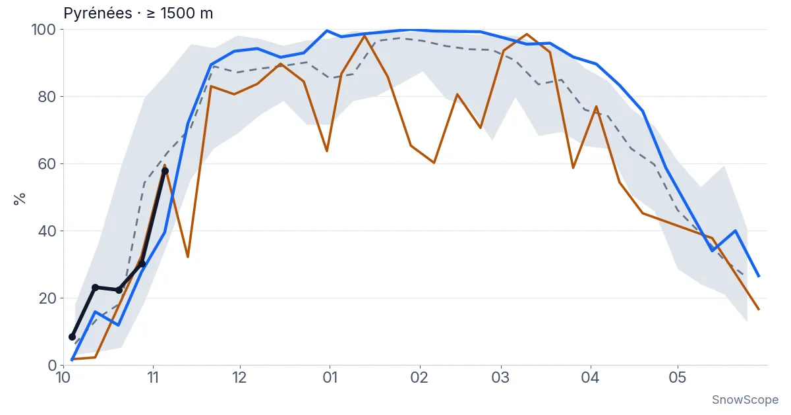
Wie lange die Pyrenäen seit 2000-01 jeden Winter weiß blieben, vom Satelliten aus gesehen, und die Schneehöhe an 10 Stationen mit langen Reihen. Drei magere Winter in Folge endeten 2025-26; dieser Herbst hat normal begonnen.

Wo liegt heute im US-Westen der meiste Schnee? Wenn du heute den meisten Schnee im US-Westen willst, schau nach Wolf Creek (USA): etwa 35 in (90 cm) …
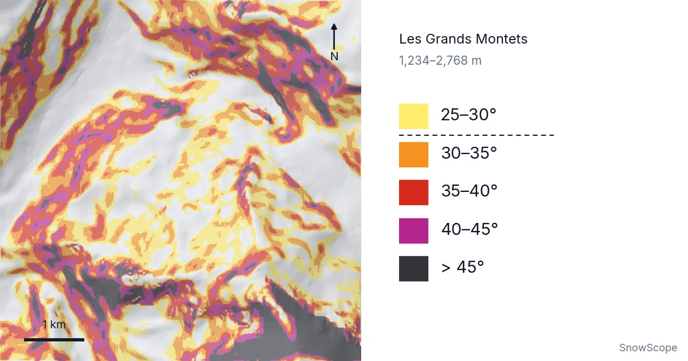
Eine Neigungskarte von Les Grands Montets und sieben weiteren Skigebieten zeigt, wie viel Gelände steiler als 30°, 35° und 40° ist – und warum diese Grenze für Lawinen zählt.
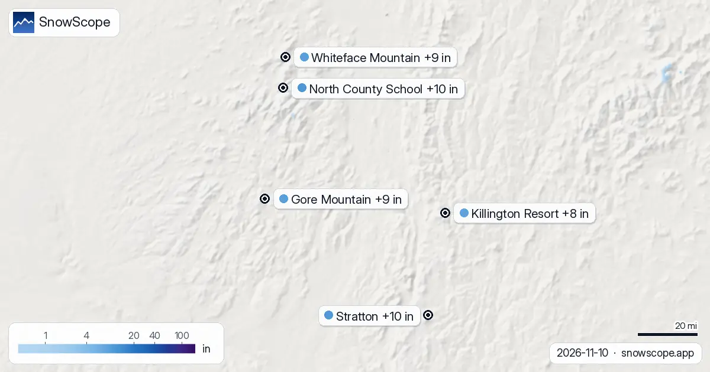
Der Schnee hat sich seit dem 8. November zurückgezogen, von 676 sq mi (1.750 km²) auf heute 42 sq mi (110 km²); für den 13. November ergibt unsere …

In 24 von 46 Wintern hatten die Skigebiete auf der italienischen und südfranzösischen Seite der Alpen einen relativ stärkeren Winter als die Nordseite. Die Grafik, die großen Jahre und das Wetter dahinter.

Schnee im Dezember hängt vor allem von der Höhe ab. 46 vergangene Winter in 676 Alpen-Skigebieten zeigen, wie viel Schnee am 1., 15. und 22. Dezember zu erwarten ist, von unter 1.200 m bis über 2.400 m.

Whistler Blackcomb bekam in einer Woche 75 cm Neuschnee am Gipfel, dann einen warmen Sturm mit 124 mm Wasser. Ein einfacher Leitfaden zu Unterlage, Neuschnee, Regen und Harschdeckel.

Wo liegt heute in Westkanada der meiste Schnee? Der meiste Schnee in Westkanada heute: Manning Park Resort, etwa 110 cm in den oberen Hängen …

Die Nullgradgrenze in den Pyrenäen, nächste Tage: 2.420 m bis 3.710 m. Die Schneefallgrenze, etwa 300 m tiefer, erreicht ihren Höchstwert von 3.400 m …

Ein günstiger 3-Tage-Plan am Comer See im Dezember mit echten Preisen 2026-27: Züge, Schiffe, Standseilbahn und ein Skitag in Piani di Bobbio oder Madesimo, die Ersparnis gegenüber Cortina und die Chance auf Schnee zu Weihnachten.

8 cm: So viel Schnee findet unser Modell heute höchstens im Atlas. Die Skigebiete im Atlas haben heute keinen Schnee auf den Pisten. Unser …

Der Schnee heute in Livigno, was die europäische Saisonprognose für den Dezember sagt, und warum die Höhe zu Weihnachten gegen einen milden Monat gewinnt.

Schnee heute in Cortina, die europäische Saisonprognose für Dezember und unsere Chancen auf weiße Weihnachten in den östlichen Dolomiten.

Wo der Dezember 2026 in den Dolomiten von Gröden bis Cortina schneereicher oder schneeärmer aussieht: die europäische Saisonprognose, unsere Karte und die Chancen auf weiße Weihnachten.

Bis zu 37 cm: So viel gibt unsere Prognose Piau-Engaly bis zum 13. November. Bis zum 13. November ergibt unsere Prognose 37 cm in Piau-Engaly, 21 cm …

Wie viel Wasser der Schnee im Atlas im Februar 2027 halten könnte: Die europäische Saisonprognose ist etwa 3 °C wärmer und im Westen und Süden nasser, die Schneechancen in Marokkos Flussgebieten bleiben gering.

Die europäische Saisonprognose macht den Januar 2027 im Atlas etwa 2 °C wärmer. Unser Ausblick für Schneehöhe, Schneewasser und das für Marokkos Flüsse gespeicherte Wasser.

Der Bou Iblane ist noch kahl. Die europäische Saisonprognose sieht einen klar wärmeren Dezember, und im ganzen verschneiten Mittleren Atlas neigen unsere Chancen zu weniger Schnee.

Jeden Tag listen wir die Skigebiete, die den meisten Neuschnee bekommen sollen, für die nächsten 24 Stunden und bis zum 13. November, in Europa, …

Wo der Dezember 2026 von Montana bis New Mexico schneereicher oder schneeärmer aussieht: die europäische Saisonprognose und unsere Karte, mit Colorado, Utah und den nördlichen Rockies.

Füllt sich die Schneedecke von den Écrins bis zu den Seealpen und ins Piemont im Dezember 2026 wie gewohnt? Die europäische Saisonprognose und unsere Karte, Berg für Berg.

Noch kein Schnee in Oukaimeden. Die europäische Saisonprognose sieht einen wärmeren Dezember im Hohen Atlas, und unsere Karte zeigt auf fast allen Gipfeln schlechtere Chancen.

Schnee heute an den Grands Montets, die europäische Saisonprognose für Dezember und unsere Karte, wo der Dezember rund um den Mont Blanc schneereicher oder schneeärmer aussieht.

Vail in Zahlen: übliches Maximum von etwa 64 in (162 cm) an der Mittelstation in 46 vergangenen Wintern, März am schneereichsten, dazu Gelände, Anreise, Sicherheit.

Zermatt in Zahlen: wo der Schnee hält, die sichersten Monate und die Anreise ins autofreie Dorf, aus 46 vergangenen Wintern.

Steamboat, Colorado, für Familien: was für Kleinkinder, Schulkinder, Teenager und Eltern passt, mit dem Schnee aus 46 vergangenen Wintern auf drei Höhen.

Ist Verbier etwas für Anfänger? Wann ist der Schnee am besten? Wie kommt man hin? Antworten zu den 4 Vallées und 46 vergangenen Wintern.

Wie du den ersten Tag in Park City Mountain, Utah, verbringst und wann du fährst: Unsere Schneehistorie gibt etwa 71 in (180 cm) als übliches Maximum an der Mittelstation in 46 vergangenen Wintern.
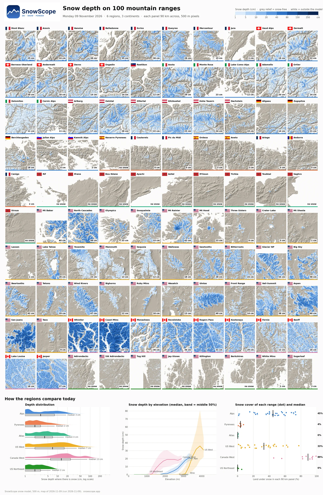
Ein Bild, 100 Gebirge in den Alpen, den Pyrenäen, im Atlas und in Nordamerika: Kanada führt mit 89 % Schneebedeckung, die Alpen erreichen 45 %, der Atlas und der Nordosten der USA sind noch aper.

Die Sellaronda ab Wolkenstein (Sëlva) in Gröden: Grödner Joch, Campolongo, Pordoi und Sellajoch der Reihe nach, mit unserer Schneehistorie von 46 vergangenen Wintern.

Mt Baker, Washington: etwa 133 in (337 cm) übliches Maximum an der Mittelstation in 46 vergangenen Wintern, ein Schneefall-Weltrekord, keine Unterkunft am Berg.

Val d'Isère und der Espace Killy für Anfänger, Fortgeschrittene und Könner, mit dem Schnee aus 46 Wintern auf drei Höhen.

Mammoth Mountain nach Saison planen: etwa 93 in (235 cm) übliches Maximum an der Mittelstation in 46 vergangenen Wintern, März am tiefsten, lange Frühjahre, schwankende Winter.

Kitzbühel ist berühmt und tief gelegen. Was 46 vergangene Winter über den Schnee auf 762 m, 1.377 m und 1.993 m sagen, was sich geändert hat und welche Wochen die sicherere Wahl sind.

Mythen über Jackson Hole im Faktencheck mit unserer Schneehistorie: etwa 80 in (204 cm) übliches Maximum an der Mittelstation in 46 vergangenen Wintern, ohne klaren Rückgang.
Wir haben die SnowScope-Schneehöhenkarte mit 2.012 Messstationen verglichen: RMSE 7,7 cm, Abweichung -0,5 cm, Schnee oder kein Schnee in 88 % der Fälle richtig. Was funktioniert, was noch nicht und was als Nächstes kommt.

Zehn praktische Punkte für eine Skireise nach Livigno: Anreise, Kälte, zollfreie Geschäfte, die zwei Talseiten und die beste Schneezeit, aus 46 vergangenen Wintern unserer Schneehistorie.

Im Winter nach Telluride, Flughafen für Flughafen: Telluride Regional, Montrose, die Fahrt auf dem Highway 145 mit Colorados Traktionsgesetz und die kostenlose Gondel nach Mountain Village.

Wie ein Schneetag in Whitewater bei Nelson meist abläuft, vom frühen Blick auf die Vorhersage bis zur letzten Abfahrt, mit dem Schnee aus 46 vergangenen Wintern auf drei Höhen.

Arc 1600, 1800, 1950 und 2000 im Vergleich nach Schnee, Pisten und Anreise, mit 46 vergangenen Wintern unserer Schneehistorie auf drei Höhen von Les Arcs.

So kommst du im Winter nach Snowbird: eine Canyonstraße (SR-210), Utahs Traktionsregel, der UTA-Skibus und die Fahrt vom Flughafen Salt Lake City.
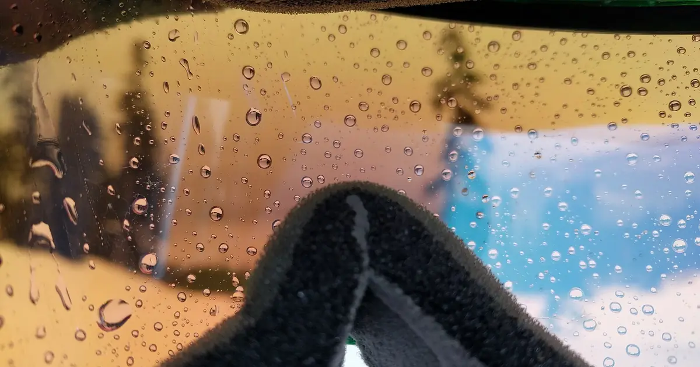
Whistler Blackcomb für jedes Können, mit unserer Schneehistorie: etwa 370 cm übliches Maximum an der Mittelstation in 46 vergangenen Wintern, März und April am tiefsten.

Von den Walsern zum Weißen Ring: die Daten, die Lech Zürs geprägt haben, danach unsere Schneehistorie damals und heute, die ersten fünfzehn von 46 vergangenen Wintern gegen die letzten fünfzehn.

Mit dem Auto nach Palisades Tahoe im Winter: Entfernungen ab Reno, Kettenpflicht R-1 bis R-3 in Kalifornien, Parken mit Reservierung, TART-Busse.

Eine praktische Packliste für Stowe, Vermont: Schichten, Gesichtsschutz, Skibrille, scharfe Kanten und Wärmepads, verknüpft mit dem Schnee aus 46 vergangenen Wintern am Mount Mansfield.

Skifahren in Lake Louise zu Saisonbeginn: warum es früh losgeht, wie der Schnee im November und Dezember in 46 vergangenen Wintern meist aussah und wie man auf dünner Unterlage fährt.

Was an La Grave stimmt, dem Freeride-Berg unter der Meije: Gelände, Sicherheit, Schnee pro Monat und Trend, aus 46 vergangenen Wintern.

Big Sky, Montana, anschaulich: 5.850 Acres unter dem Lone Peak, und Schnee, der in 46 vergangenen Wintern nahe dem Gipfel etwa fünfmal so tief war wie im Tal.

Andorra hat keinen großen Flughafen: So kommst du von Barcelona oder Toulouse nach Grandvalira, Envalira-Tunnel, CG2 und Parkplätze.

Magic Mountain in Londonderry, Vermont: ein unabhängiger Skiberg mit steilen Waldabfahrten, einem alten roten Sessellift und dünnem Naturschnee. Fünf Dinge, mit dem Schnee aus 46 vergangenen Wintern.

Fahr Revelstokes ganzen Höhenunterschied erst im Kopf: der Schnee am Gipfel, an der Bergmitte und unten im Tal in 46 vergangenen Wintern, und wann jeder Teil am besten ist.

Sieben Tage in der Silvretta Arena, einer nach dem anderen: wo der Schnee liegt, wann man nach Samnaun fährt und was 46 vergangene Winter über Ischgls Schnee auf drei Höhen sagen.

Aspen Snowmass im Vergleich: Snowmass hat etwa 75 in (190 cm) übliches Maximum an der Mittelstation in 46 vergangenen Wintern, Aspen Mountain etwa 69 in (174 cm).

Gourette und Cauterets im Vergleich: Höhen, üblicher Schnee pro Monat, die besten Wochen und die Anreise, aus 46 vergangenen Wintern.
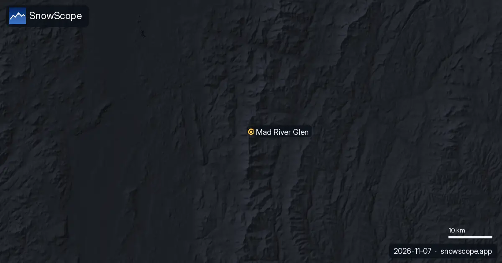
Mad River Glen, Vermont: Naturschnee, etwa 30 in (75 cm) übliches Maximum an der Mittelstation in 46 vergangenen Wintern, Februar am tiefsten. Drei Pläne für einen Tag dort.

Banff Sunshine Village Monat für Monat: etwa 100 cm an der Mittelstation in einem üblichen März in 46 vergangenen Wintern, oben ist der April am tiefsten, Saison bis Ende Mai.

Saas-Fee ist autofrei: mit dem Zug nach Visp und dem Postauto 511, mit dem Auto durchs Rhonetal und per Autoverlad, Parkhaus am Dorfeingang, Gratisbusse.

Etwa 109 in (276 cm) ist Altas übliches Maximum an der Mittelstation in 46 vergangenen Wintern. Hier: warum Snowboards daheim bleiben, die besten Monate und wie du in den Canyon kommst.

Modell plus Prognose in den Pyrenäen ergibt heute dünner Schnee zum Saisonstart und milde Luft, die einen Harschdeckel hinterlassen kann. Was du …

Alpe d'Huez liegt zur Sonne. So plant man den Tag nach Uhrzeit und Höhe, mit dem Schnee von 46 vergangenen Wintern von den tiefen Dörfern bis zum Pic Blanc.

Unsere 46-Winter-Reihe in den Alpen, 108 Punkte von 667 bis 3.872 m: überall weniger Schneetage, deutlich an 81 %. Was sich je Höhe änderte und warum.

Auf der Höhe von Oukaïmeden zeigt unsere 46-Winter-Reihe 12 % weniger Schneetage; weiter unten geht das Signal in großen Schwankungen unter.
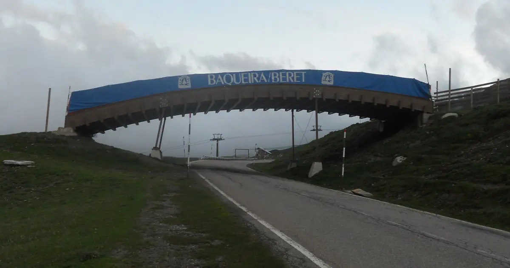
Baqueira-Beret liegt im Val d'Aran, auf der Atlantikseite der Pyrenäen. Was das für den Schnee bedeutet, geprüft an 46 vergangenen Wintern im Vergleich mit La Molina, und wann man fahren sollte.

Ein Porträt von Bonneval-sur-Arc in der Haute-Maurienne: Steindächer, ein gesperrter Pass, ein kleines Skigebiet und erstaunlich viel Schnee, aus 46 vergangenen Wintern unserer Schneehistorie.

So verbringst du den ersten Skitag in Chamonix, von den Grands Montets über Argentière bis zur richtigen Stunde für jeden Hang, mit 46 Wintern Schneedaten.
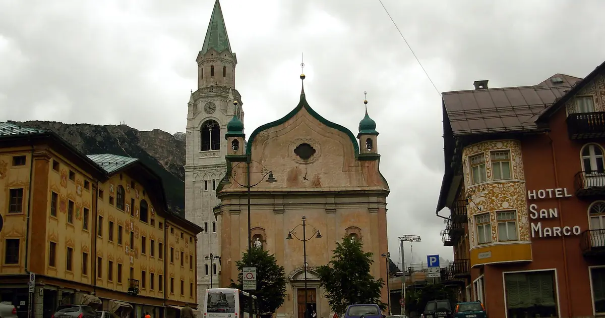
Cortina d'Ampezzo auf drei Arten: Tofana, Faloria-Cristallo und Cinque Torri-Lagazuoi, mit 46 Wintern Schneedaten auf drei Höhen.

Chantarella, Marguns, Piz Nair, White Turf: die Wörter, die man in St. Moritz hört, erklärt, und was 46 vergangene Winter unserer Schneehistorie zu jeder Höhe der Corviglia sagen.
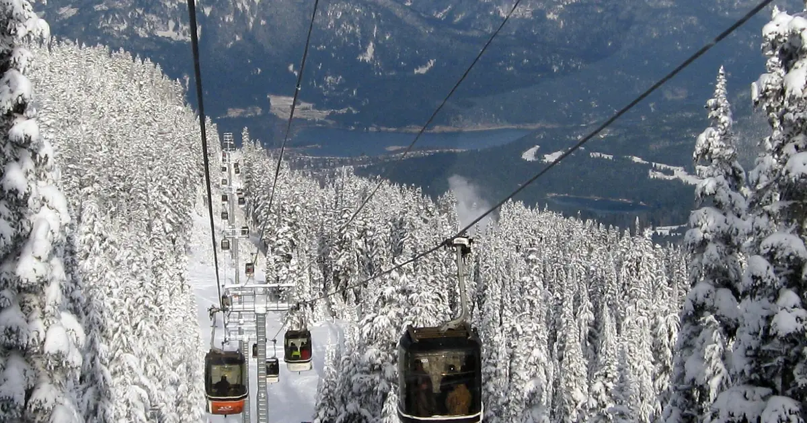
Unsere tägliche Tabelle folgt dem kommenden Schnee: die Skigebiete mit der größten Prognose für die nächsten 24 Stunden und bis zum 12. November, in …
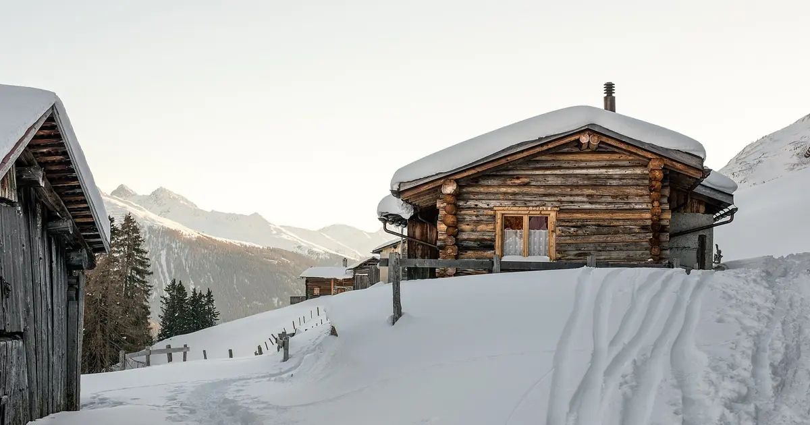
Davos und Klosters teilen sich sechs Skiberge. Ein Plan Tag für Tag, beginnend auf der Parsenn, mit dem, was 46 vergangene Winter unserer Schneehistorie über ihre Höhen sagen.
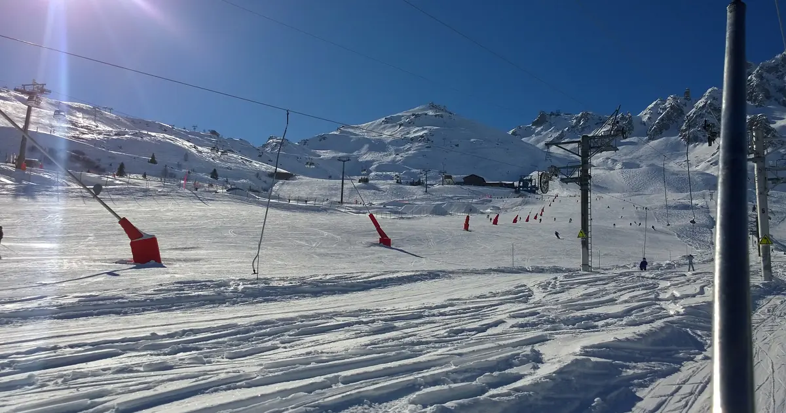
Wann Courchevel und die 3 Vallées buchen, welches Dorf wählen und wo der Schnee hält, geplant aus 46 vergangenen Wintern.

St. Anton und Ski Arlberg durch den Winter: die übliche Schneehöhe pro Monat auf drei Höhen, aus 46 vergangenen Wintern.
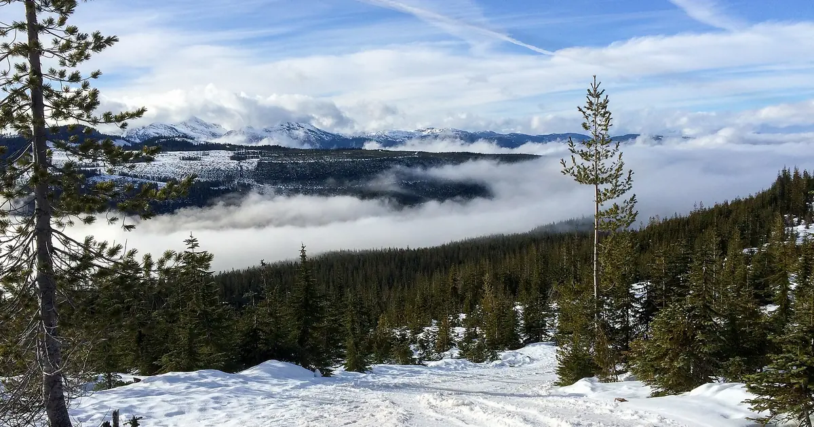
Wenn du heute den meisten Schnee in Westkanada willst, schau nach Mount Washington Alpine Resort (Kanada): etwa 145 cm weit oben. Danach kommen …

Liegt mehr Schnee als vor einem Jahr? Wir haben heute mit dem 8. November des letzten Winters in 4 Skigebieten in den Alpen verglichen: 0 davon haben …
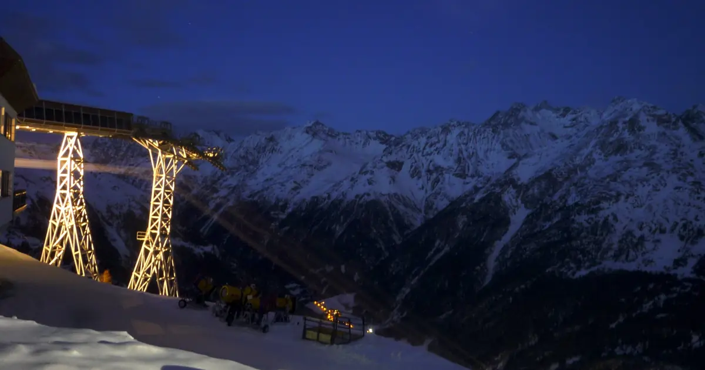
Ein Schneejahr in Sölden, Phase für Phase: wann die Gletscher weiß werden, das Weltcup-Wochenende, die lange Wintermitte und die Frühjahrswochen, aus 46 vergangenen Wintern auf drei Höhen.

Jetzt ist mehr Boden weiß: 0 sq mi (0 km²) am 6. November, heute 788 sq mi (2.040 km²) und 104 sq mi (270 km²) erwartet am 11. November. Ski Eldorado …
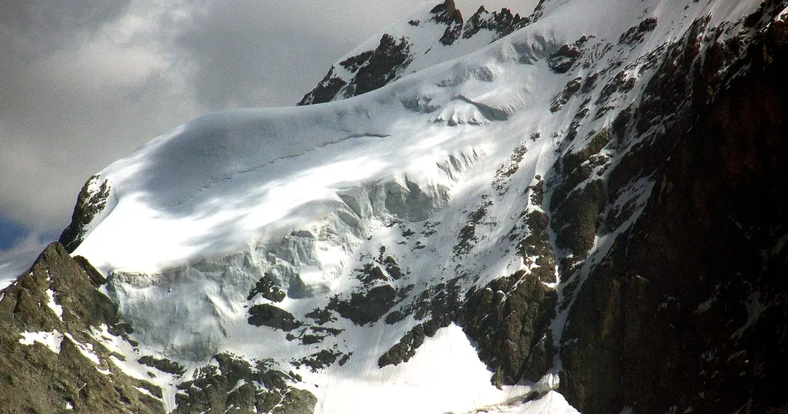
50 cm in den oberen Hängen: Deshalb steht La Grave oben auf unserer Liste. Wir haben Schneehöhe, Neuschnee der letzten 72 Stunden und Prognose …

Weniger Schneetage an allen 120 Punkten in den Pyrenäen seit 1980-81, am stärksten unter 1.500 m: unsere 46-Winter-Reihe und die Forschung dazu.
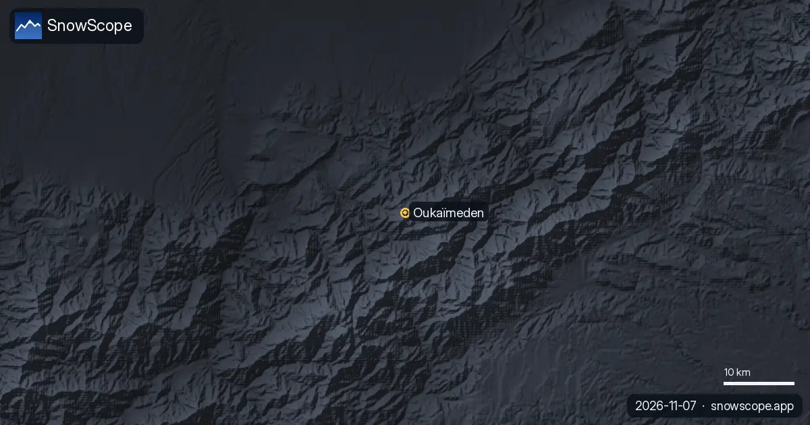
Ein praktisches Notizbuch zu Oukaïmeden im Hohen Atlas: wann der Schnee meist kommt, wie viel, welche Hänge und die Anreise ab Marrakesch.

Unsere Prognose hat die Nullgradgrenze in den Pyrenäen in den kommenden Tagen zwischen 2.610 m und 3.840 m. In der wärmsten Zeit des Tages steigt die …

Telluride Schneedecke: 45 in Auflage in den oberen Hängen (8. November). Am meisten Schnee im US-Westen liegt in Kendall Mountain: etwa 47 in …
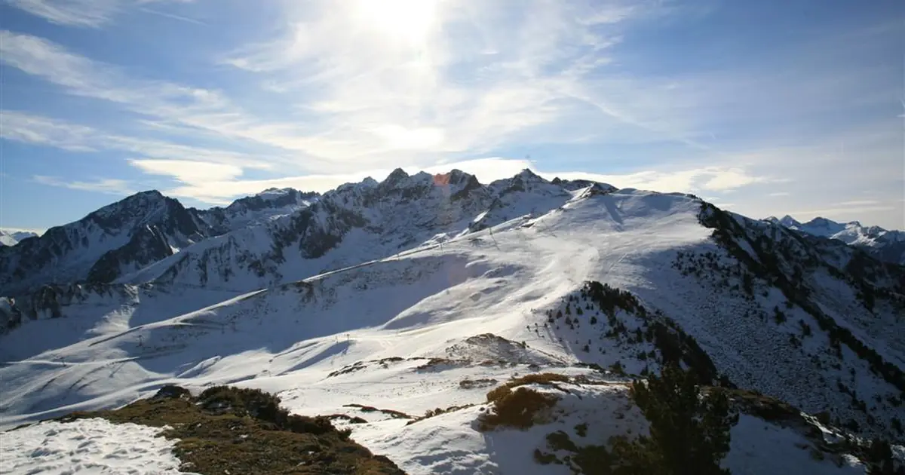
So gelingt ein Tag in Luz-Ardiden, einem kleinen Skigebiet über Luz-Saint-Sauveur in den Hautes-Pyrénées: die Straße, die zwei Sektoren, der Schnee aus 46 vergangenen Wintern und die besten Wochen.

Whistler Blackcomb bekam in den letzten 72 Stunden 100 cm Neuschnee, davon 68 cm in den letzten 24 Stunden. Jetzt liegen dort laut unserem …

Wo solltest du in den nächsten Tagen sein? Hier sind die Skigebiete mit dem meisten prognostizierten Neuschnee für die nächsten 24 Stunden und bis …
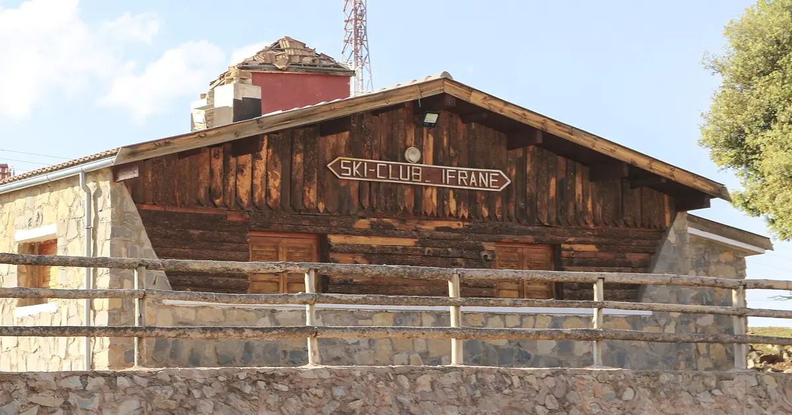
Michlifen bei Ifrane hat Schnee in kurzen Episoden statt einer Saison. Was 46 vergangene Winter zeigen, warum die übliche Höhe null ist und wie man an den richtigen Tagen dort ist.
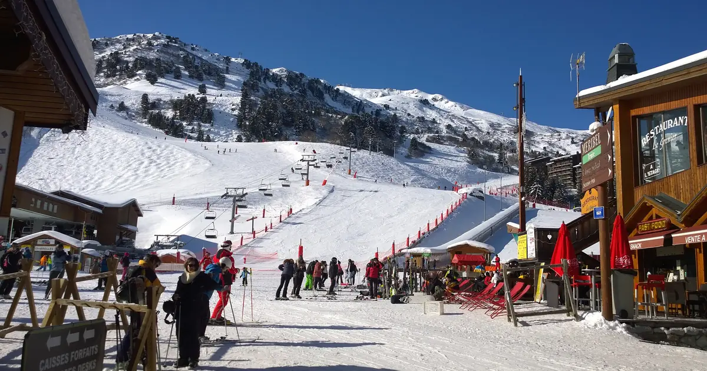
Drei Arten, einen Tag ab Méribel zu verbringen: nach Osten nach Courchevel, nach Süden Richtung Val Thorens oder daheim am Mont Vallon, mit dem Schnee von 46 vergangenen Wintern auf drei Höhen.

Ein feuchter Pazifiksturm: 92 cm Neuschnee auf Whistlers oberen Pisten vom 8. bis 10. November, Regen unterhalb von etwa 1.620 m.

0 cm auf 2.052 m am 7. November, wie in vielen vergangenen Wintern. Der letzte Winter erreichte maximal 100,6 cm. Interaktive Grafik und Daten.

Milde Luft bei den nächsten Niederschlägen: Die Schneefallgrenze liegt meist zwischen 2.190 und 2.850 m. Karte, Diagramm und Animation.

Schneefallgrenze nahe 3.710 m vom 8. bis 12. November: Regen in Oukaïmeden und Imlil, Schnee auf dem Gipfel des Toubkal. Karte und Grafik.

Mt Baker bekam in den letzten 72 Stunden 13 in (32 cm) Neuschnee, davon 1 in (3 cm) in den letzten 24 Stunden. Jetzt liegen dort laut unserem …

Bis zum 10. November ergibt unsere Prognose 103 cm in Whistler Blackcomb, 99 cm in Ski Callaghan und 74 cm in Mount Cain Alpine Park. Die Werte der …

Am meisten Schnee im US-Westen liegt in Kendall Mountain: etwa 50 in (127 cm) in den oberen Hängen, laut unserem Schneemodell. Danach kommen …

Bis zum 10. November ergibt unsere Prognose 21 in (53 cm) in Mt Baker, 7 in (18 cm) in Mt. Hood Meadows und 6 in (14 cm) in Hurricane Ridge. Die …
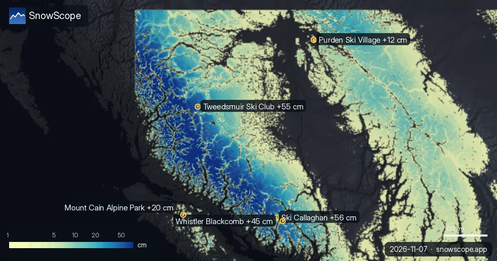
Ski Callaghan bekam in den letzten 72 Stunden 56 cm Neuschnee, davon 9 cm in den letzten 24 Stunden. Jetzt liegen dort laut unserem Schneemodell etwa …

Rund 65 mm am Toubkal bis 12. November, aber die Nullgradgrenze bleibt bei etwa 4.000 m: Regen in Oukaïmeden und in den Tälern, Schnee nur ganz oben.
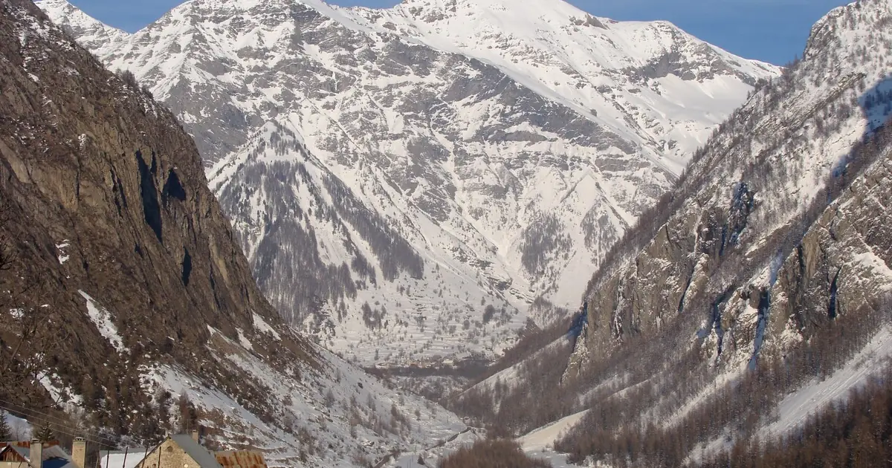
Bis zum 10. November ergibt unsere Prognose 36 cm in Orcières Merlette, 33 cm in Les Deux Alpes und 32 cm in La Grave. Die Werte der Skigebiete sind …

Die Skigebiete im Atlas haben heute keinen Schnee auf den Pisten. Unser Schneemodell findet nur auf den höchsten Gipfeln Schnee: etwa 80 km² …

Wir haben den Schnee von heute in 3 Skigebieten in den Alpen mit demselben Datum in jedem der letzten 46 Winter verglichen. 0 liegen deutlich über …

Artesina bekam in den letzten 72 Stunden 44 cm Neuschnee. Jetzt liegen dort laut unserem Schneemodell etwa 20 cm in den oberen Hängen.

Estació d'esquí Port del Comte (Spanien) hat heute den meisten Schnee in den Pyrenäen, mit etwa 29 cm in den oberen Hängen. Es folgen Aramón Cerler …

Die heutige Tabelle sortiert die Skigebiete Europas, Marokkos und Nordamerikas nach prognostiziertem Neuschnee für die nächsten 24 Stunden und bis …
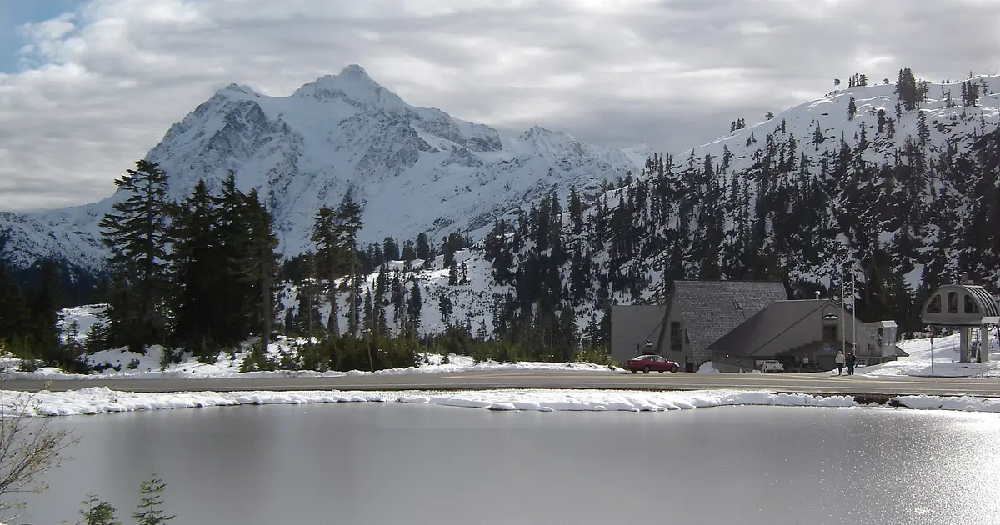
Bis zum 9. November ergibt unsere Prognose 13 in (33 cm) in Mt Baker, 5 in (12 cm) in Hurricane Ridge und 4 in (10 cm) in Mt. Hood Meadows. Die Werte …
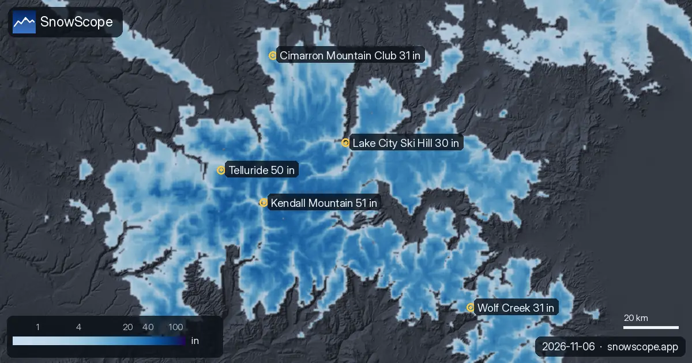
Wir haben den Schnee von heute in 5 Skigebieten im US-Westen mit demselben Datum in jedem der letzten 46 Winter verglichen. 3 liegen deutlich über …

Ski Callaghan bekam in den letzten 72 Stunden 44 cm Neuschnee, davon 32 cm in den letzten 24 Stunden. Jetzt liegen dort laut unserem Schneemodell …

Mt Baker bekam in den letzten 72 Stunden 11 in (27 cm) Neuschnee, davon 4 in (11 cm) in den letzten 24 Stunden. Jetzt liegen dort laut unserem …

Bis zum 9. November ergibt unsere Prognose 4 in (11 cm) in Ski Eldorado und 4 in (10 cm) in Tuckerman Ravine. Die Werte der Skigebiete sind …

Bis zum 9. November ergibt unsere Prognose 74 cm in Whistler Blackcomb, 63 cm in Ski Callaghan und 50 cm in Mount Cain Alpine Park. Die Werte der …

Oukaimden (Marokko) hat heute den meisten Schnee im Atlas (Marokko), mit etwa 1 cm in den oberen Hängen. Es folgen Habri mit 0 cm und Michlifen mit …

Wir haben Schneehöhe, Neuschnee der letzten 72 Stunden und Prognose kombiniert und Isola 2000, Artesina und Bonneval-sur-Arc ausgewählt. Von diesen …

Wir haben den Schnee von heute in 4 Skigebieten in den Pyrenäen mit demselben Datum in jedem der letzten 46 Winter verglichen. 1 liegen deutlich über …
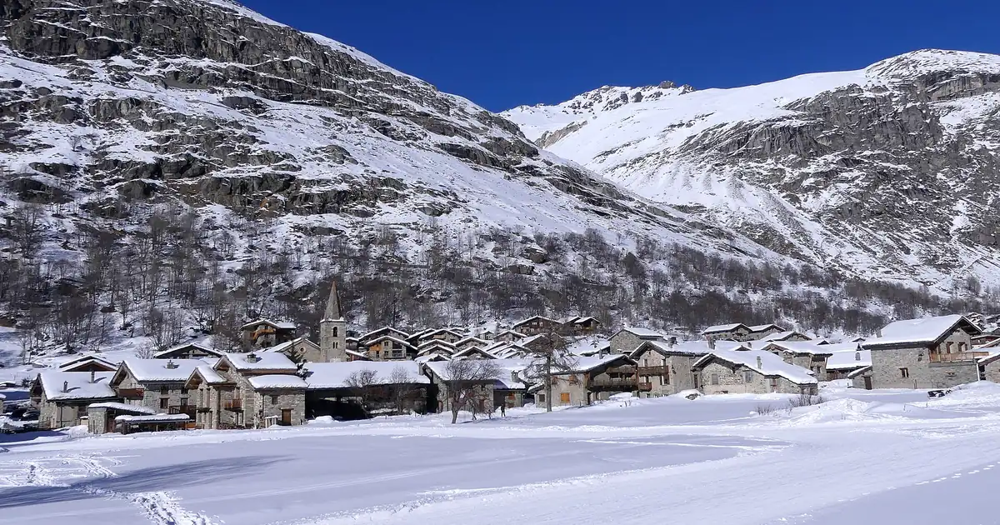
Bonneval-sur-Arc (Frankreich) hat heute den meisten Schnee in den Alpen, mit etwa 52 cm in den oberen Hängen. Es folgen La Grave mit 52 cm und Orelle …

Wir haben Schneehöhe, Neuschnee der letzten 72 Stunden und Prognose kombiniert und Aramón Cerler, Rasos de Peguera und Masella ausgewählt. Von diesen …

Isola 2000 bekam in den letzten 72 Stunden 62 cm Neuschnee, davon 7 cm in den letzten 24 Stunden. Jetzt liegen dort laut unserem Schneemodell etwa …
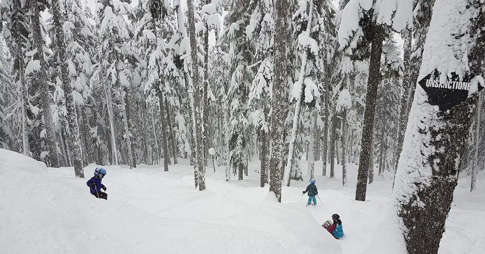
Wie viel Schnee gewinnen die Berge? Unsere Tabelle zeigt die Skigebiete mit dem meisten prognostizierten Neuschnee für die nächsten 24 Stunden und …

Die Skigebiete im Atlas haben heute keinen Schnee auf den Pisten. Unser Schneemodell findet nur auf den höchsten Gipfeln Schnee: etwa 60 km² …

In den letzten 72 Stunden gab es in den Alpen erhebliche Schneefälle, wobei Isola 2000 bis Donnerstag, den 5. November 2026, 58 cm Neuschnee meldete.

Bis zum 8. November ergibt unsere Prognose 21 cm in Saas Grund, 18 cm in Grindelwald und 18 cm in Pescegallo. Die Werte der Skigebiete sind …

Wir haben Schneehöhe, Neuschnee der letzten 72 Stunden und Prognose kombiniert und Artesina, Isola 2000 und Riserva Bianca ausgewählt. Von diesen …

Rasos de Peguera bekam in den letzten 72 Stunden 15 cm Neuschnee. Jetzt liegen dort laut unserem Schneemodell etwa 20 cm in den oberen Hängen.

Wir haben Schneehöhe, Neuschnee der letzten 72 Stunden und Prognose kombiniert und Rasos de Peguera, Aramón Cerler und Masella ausgewählt. Von diesen …

Am meisten Schnee im US-Westen liegt in Kendall Mountain: etwa 51 in (130 cm) in den oberen Hängen, laut unserem Schneemodell. Danach kommen …

Bis zum 8. November ergibt unsere Prognose 17 in (42 cm) in Mt Baker und 5 in (13 cm) in Hurricane Ridge. Die Werte der Skigebiete sind …
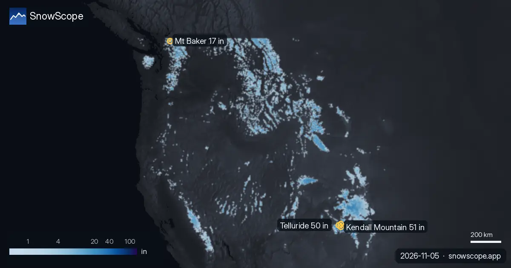
Wir haben Schneehöhe, Neuschnee der letzten 72 Stunden und Prognose kombiniert und Kendall Mountain, Telluride und Mt Baker ausgewählt. Von diesen …

Am meisten Schnee in Westkanada liegt in Silver Star: etwa 112 cm in den oberen Hängen, laut unserem Schneemodell. Danach kommen Big White (90 cm) …

Bis zum 8. November ergibt unsere Prognose 94 cm in Whistler Blackcomb, 93 cm in Ski Callaghan und 70 cm in Tweedsmuir Ski Club. Die Werte der …

Unser Schneemodell für den 5. November 2026 prognostiziert bis Sonntag bis zu 94 cm Neuschnee in Westkanada, mit erheblichem Schneefall auch in den Alpen und im Westen der USA.
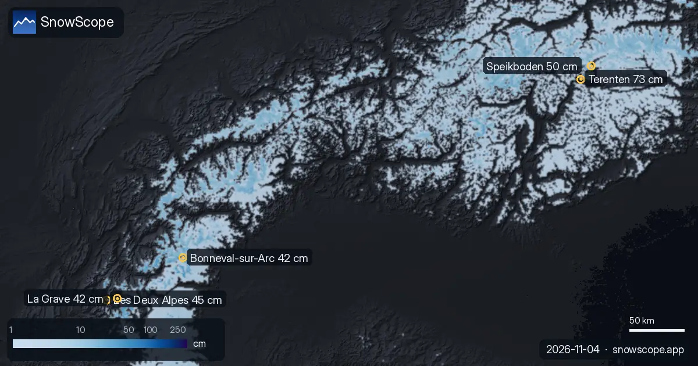
Am meisten Schnee in den Alpen liegt in Terenten: etwa 73 cm in den oberen Hängen, laut unserem Schneemodell. Danach kommen Speikboden (50 cm) und …

Wir haben den Schnee von heute in 3 Skigebieten in den Alpen mit demselben Datum in jedem der letzten 46 Winter verglichen. 0 liegen deutlich über …
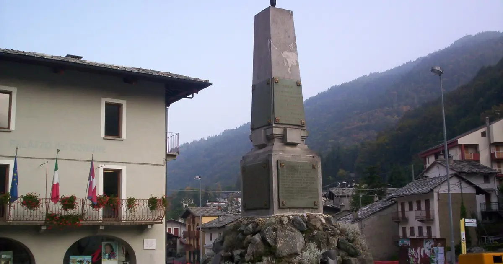
Wir haben Schneehöhe, Neuschnee der letzten 72 Stunden und Prognose kombiniert und Crissolo, Prali und La Grave ausgewählt. Von diesen Skigebieten …

Wir haben den Schnee von heute in 4 Skigebieten in den Pyrenäen mit demselben Datum in jedem der letzten 46 Winter verglichen. 1 liegen deutlich über …
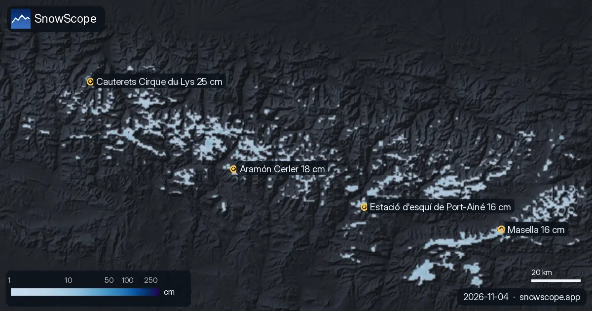
Wir haben Schneehöhe, Neuschnee der letzten 72 Stunden und Prognose kombiniert und Masella, Cauterets Cirque du Lys und Aramón Cerler ausgewählt. Von …
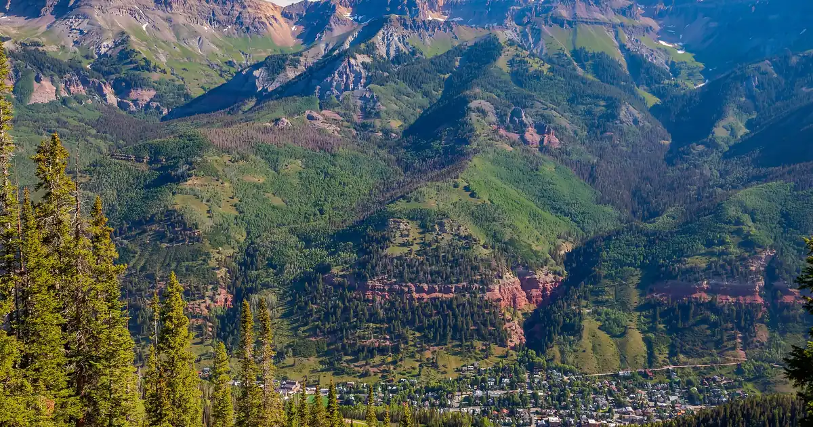
Telluride bekam in den letzten 72 Stunden 12 in (31 cm) Neuschnee, davon 1 in (3 cm) in den letzten 24 Stunden. Jetzt liegen dort laut unserem …

Am meisten Schnee im US-Westen liegt in Kendall Mountain: etwa 48 in (122 cm) in den oberen Hängen, laut unserem Schneemodell. Danach kommen …
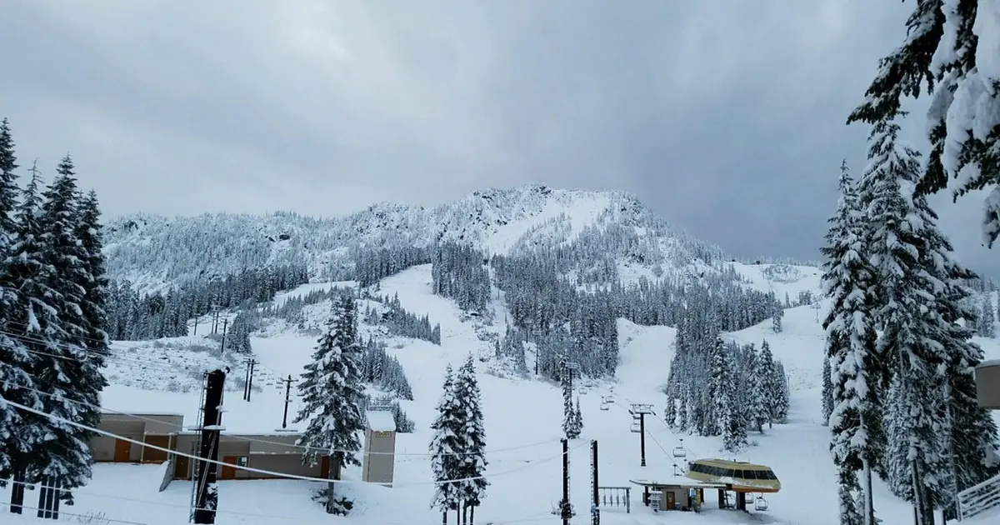
Bis zum 7. November ergibt unsere Prognose 17 in (44 cm) in Mt Baker, 6 in (14 cm) in Crystal Mountain und 6 in (14 cm) in Stevens Pass. Die Werte …

Bis zum 7. November ergibt unsere Prognose 48 cm in Ski Callaghan, 47 cm in Whistler Blackcomb und 34 cm in Mount Cain Alpine Park. Die Werte der …

Wir haben Schneehöhe, Neuschnee der letzten 72 Stunden und Prognose kombiniert und Mount Cain Alpine Park, Whistler Blackcomb und Silver Star …

Die heutige Tabelle sortiert die Skigebiete Europas, Marokkos und Nordamerikas nach prognostiziertem Neuschnee für die nächsten 24 Stunden und bis …

Welche Skigebiete haben fast immer Schnee? Wir haben 46 vergangene Winter (1980-81–2025-26) für jedes Skigebiet unserer Karte ausgewertet und die …

Kope bekam in den letzten 72 Stunden 21 cm Neuschnee. Jetzt liegen dort laut unserem Schneemodell etwa 11 cm in den oberen Hängen.

Am meisten Schnee in den Alpen liegt in Bonneval-sur-Arc: etwa 55 cm in den oberen Hängen, laut unserem Schneemodell. Danach kommen Schnalstal …
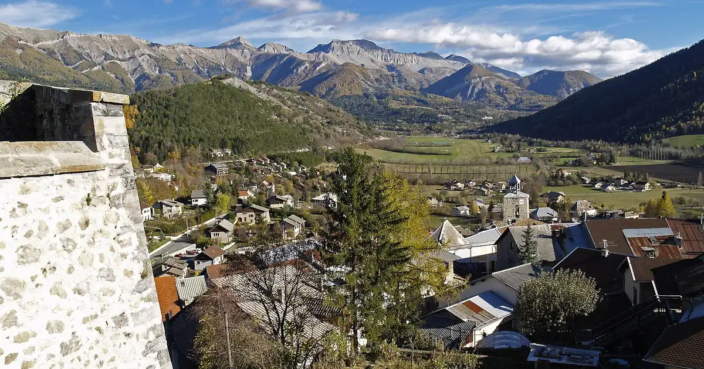
Bis zum 6. November ergibt unsere Prognose 37 cm in Chabanon, 34 cm in Dévoluy und 33 cm in Chaillol. Die Werte der Skigebiete sind Modellschätzungen …
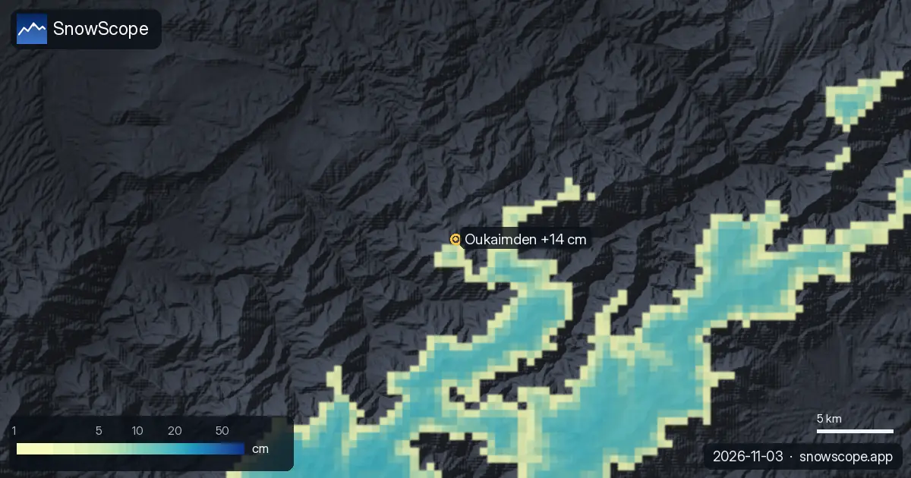
Oukaimden bekam in den letzten 72 Stunden 14 cm Neuschnee, davon 5 cm in den letzten 24 Stunden. Jetzt liegen dort laut unserem Schneemodell etwa …

Rasos de Peguera bekam in den letzten 72 Stunden 17 cm Neuschnee, davon 17 cm in den letzten 24 Stunden. Jetzt liegen dort laut unserem Schneemodell …

Wir haben Schneehöhe, Neuschnee der letzten 72 Stunden und Prognose kombiniert und Masella, Estació d'esquí de Port-Ainé und Cauterets Cirque du Lys …

Silverton Mountain bekam in den letzten 72 Stunden 26 in (66 cm) Neuschnee. Jetzt liegen dort laut unserem Schneemodell etwa 52 in (131 cm) in den …
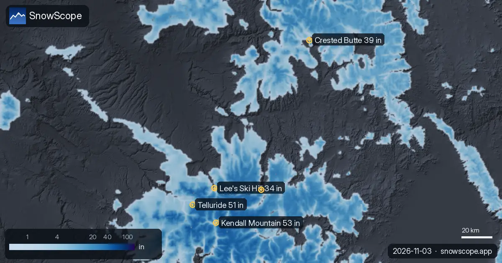
Am meisten Schnee im US-Westen liegt in Kendall Mountain: etwa 53 in (134 cm) in den oberen Hängen, laut unserem Schneemodell. Danach kommen …

Wir haben Schneehöhe, Neuschnee der letzten 72 Stunden und Prognose kombiniert und Silverton Mountain, Telluride und Lee's Ski Hill ausgewählt. Von …

Am meisten Schnee in Westkanada liegt in Big White: etwa 91 cm in den oberen Hängen, laut unserem Schneemodell. Danach kommen Silver Star (84 cm) und …

Bis zum 6. November ergibt unsere Prognose 33 cm in Ski Callaghan, 31 cm in Mount Cain Alpine Park und 25 cm in Whistler Blackcomb. Die Werte der …

Jeden Tag listen wir die Skigebiete, die den meisten Neuschnee bekommen sollen, für die nächsten 24 Stunden und bis zum 6. November, in Europa, …
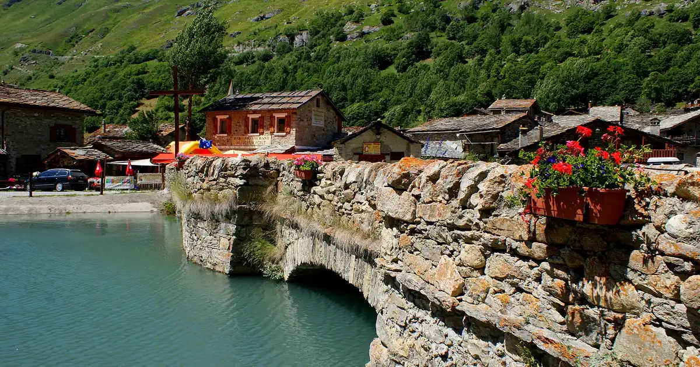
Schnee am 3. November 2026: Kendall Mountain 53 in (134 cm) nach einem Sturm, Big White 91 cm, die Alpen bis 55 cm in Bonneval-sur-Arc. Modell- und Messdaten.